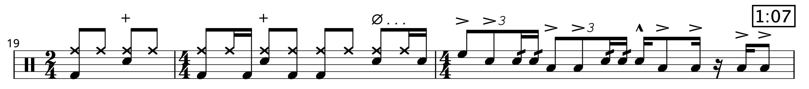
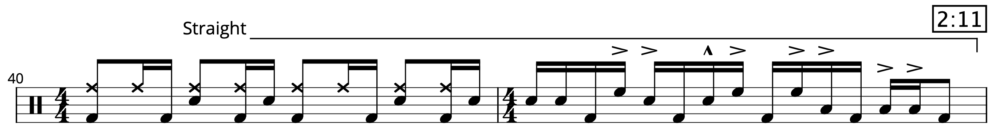

Transcription: “Little Wing” — Mitch Mitchell with The Jimi Hendrix Experience
Posted on August 2, 2020

Coming at you this week with a full song transcription: “Little Wing” by Jimi Hendrix.
I really got into Hendrix during the spring semester of my senior year in high school, and as I dove into Mitch’s playing, I poked around online for some drum sheet music. This was back when I assumed the average drummer on the internet knew what they were doing when it came to transcribing (or really when it came to anything).
I found some sheet music for “Little Wing”, which was, uh, pretty not great. About 2 years later, something inspired me to do my own take on song in it’s entirety. The transcription I had found could at least give me a head start. And since the song is barely two and a half minutes in length, the project didn’t take me long.
There are a lot of moves typical for Mitch, namely swung sixteenth notes mixed with some straight 32nd note fills around the kit. And there’s also the gag where Mitch leaves the hi-hat open and closes it on the backbeats, which he was a big fan of using on slower tracks (you can hear the same thing on the first minute of “Hey Joe”).
It's pretty well known that there are 2 extra beats snuck into the verses. It's diffuclt to notice unless you count out the song. Where these extra beats are is debatable, but if we follow the progression, each phrase ends with 2 beats of C and 4 beats of D*. I think that makes it clear.
One of Mitch’s most famous licks is heard around the 1:04 mark:
He plays variations of this fill on many Hendrix tunes, but with how slow the song is, the pattern here has a much different lope to it.
A personal favorite lick of mine occurs just before the fade-out starts, at 2:07. It’s this linear, Bonham triplet style fill played as straight sixteenths:
I suspect the sticking Mitch used alternates between right and left hand leads: RLKL RKRL KLRK RLK. Fun stuff. There are a lot of cool fills on this tune, and I suppose I could have just done the fills, but whatever.
I only hear two toms on this track. The floor tom is tuned up pretty high which throws you off a little bit, but I’m pretty sure there’re just two. It’s not easy to get a handle on Mitch’s kits — they’re not well documented and I suspect he jumped around setups at random, even on the same album. Mitch’s legendary “Voodoo Child” performance has him playing on a four tom, double bass kit that almost certainly never made into the studio.
I noticed that, during the fade out, Mitch uses an open hi-hat almost like a crash. Mitch had a funny way of crashing; he wouldn't often lay into a crash, and sometimes he would substitute a crash cymbal for a ride tap (or in this case, an open hi-hat).
That’s about it for this one. Maybe one of these days I’ll work out the glockenspiel part…
*Well, technically, the chords are pushed down a half-step, so they would be something like B and C#. But nobody thinks of it like that.
“Little Wing” on Spotify and Apple Music.
Tags: 2020 • Transcription • Mitch Mitchell • Jimi Hendrix